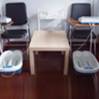
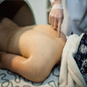
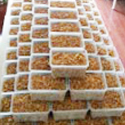

联系我们
孚道简介
孚道学院
出诊计划
特色推介
专家简介
专科专病
医案医话
网站首页
您的浏览器不支持 video 标签。
孚道简介
More
孚道仁医是由陈根成教授创办的中医医疗与网络医院、中医文化教育研究与传播传承、中医药养生保健与指导、中医药相关产品研发为一体的专业中医文化咨询…
[详情]
中医医馆
/
孚道医馆
/
中医沙龙
/
中医养生
中医养生
更多 >

祛寒

排湿
拨筋
艾灸补阳

食疗
网站公告
More
05/12/2017
讲座-慢性胃炎中医诊治
05/11/2017
讲座-命门学说的形成和发展
05/09/2017
中医养生预防心血管病2016
会员登录
>
课程报名
>
门诊预约
>
(+86) 18002251321
020-87326668